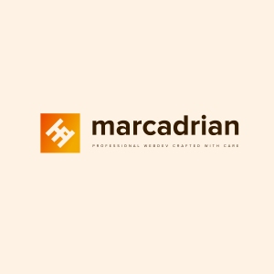

Hi, my name is Adrian.
I'm a web developer with some cool projects under my belt

About Me
As a web developer, I specialize in building innovative websites and web apps using modern technologies. I am versatile in my work, and I enjoy exploring both front and back-end web development. In addition to my technical skills, I hold a Master's degree in English Philology, specializing in business communication in English and German. Prior to my career as a web developer, I worked as a paralegal for a law firm that offered outsourcing. During that time, I sharpened my customer service skills and also analyzed data as part of my job. I am fascinated by artificial intelligence and am always looking for new ways to learn more about it.

My skills
I'm proficient in a variety of web development technologies, including HTML5, CSS3, Typescript/JavaScript, React, Next.js, Express, GraphQL, Node.js, Docker and Python. I have experience using these technologies to create dynamic, user-friendly websites and applications.
I'm constantly striving to improve my understanding of web development and enhance my skills as a web developer. In addition, I'm committed to staying up-to-date with the latest developments in the industry.
My projects
My portfolio features a variety of projects that showcase my skills and experience in web development. Some of the standout projects in my portfolio include a reddit-style website for content sharing, simple web app that aids in the search of animals at a local shelter, virtual slot machine, AI-powered audio journaling web app, and a modern web application for managing tasks and projects.
Progress-patron
Progress-patron is a modern web application for managing tasks and projects. It is built with Typescript using the latest technologies, including Next.js for server-side rendering, PostgreSQL for database management, Tailwind for styling, and Vercel for deployment using serverless edge runtime. With its intuitive interface and powerful features, Progress-patron makes it easy to stay on top of your work and achieve your goals.
{kind=link}
{kind=link}
{kind=link}
Responsive Websites and 3D Experiences
I have built responsive websites and 3D experiences for a variety of projects, including a gym, a hand painted outdoor advertising, and a restaurant. My layouts are tailored to meet the specific needs of each project and provide an optimal user experience.
Audio-mood
Audio-mood is an AI-powered web app that captures your thoughts and emotions through audio journaling. The web application is built using TypeScript, NodeJS, Express, MySQL, Docker for the backend and Next.js on Vercel, Langchain, Tailwind for the frontend.
{kind=link}
{kind=link}
{kind=link}
Sharesphere
Sharesphere is a website resembling Reddit, where users can create posts and share content. The website is built using TypeScript, GraphQL, Apollo GraphQL, NodeJS, Express, Redis, PostgreSQL, Docker for the backend and Next.js on Vercel, ChakraUI for the frontend.
{kind=link}
{kind=link}
{kind=link}
{kind=link}
Get in touch
Use this contact form to get in touch with me. Please do not hesitate to contact me if you are interested in my services or have any questions. I'd be delighted to provide additional information and answer any questions you may have. I hope to hear from you and collaborate with you in the future.
©marcadrian 2025. All rights reserved. Design:
HTML5 UP.